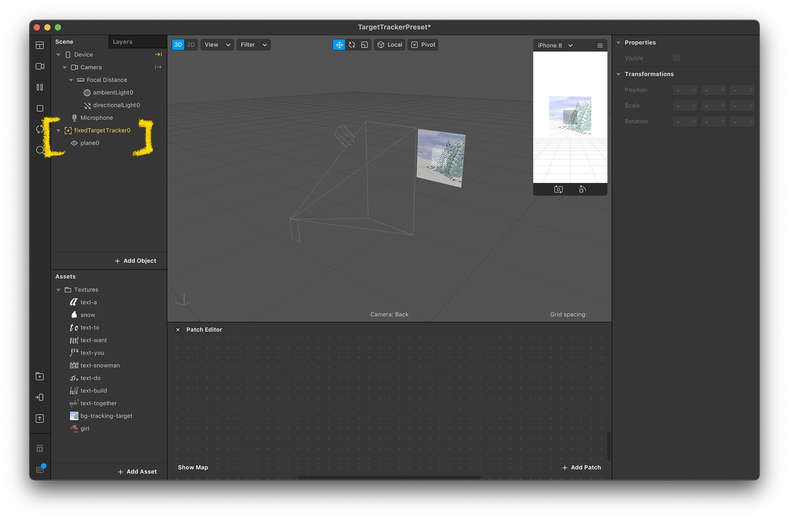
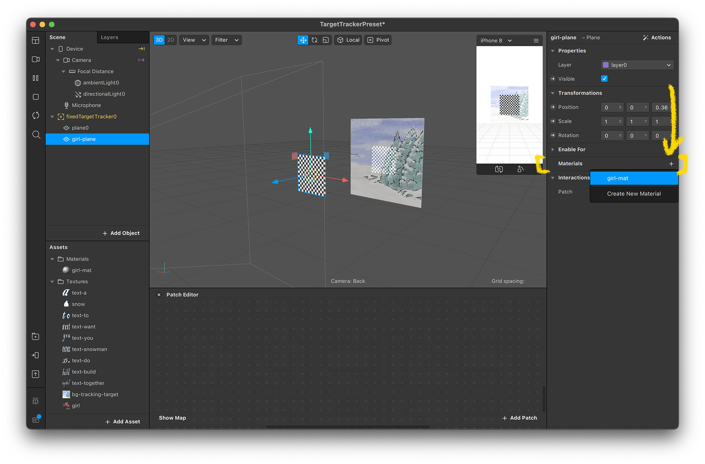
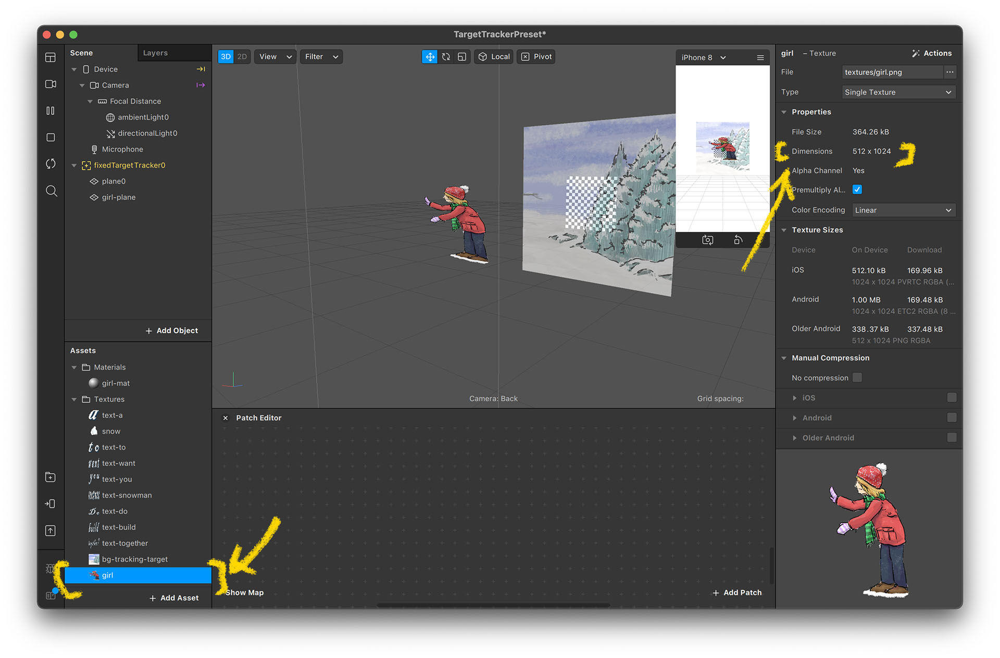
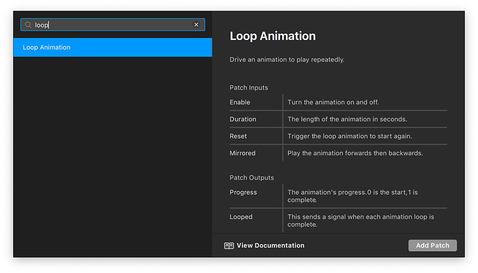
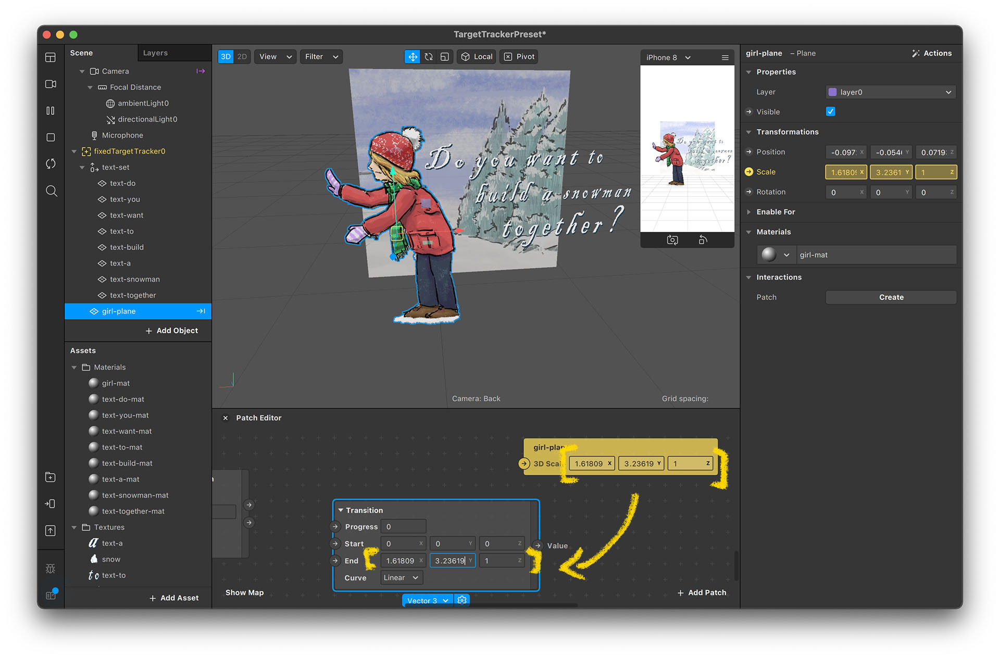
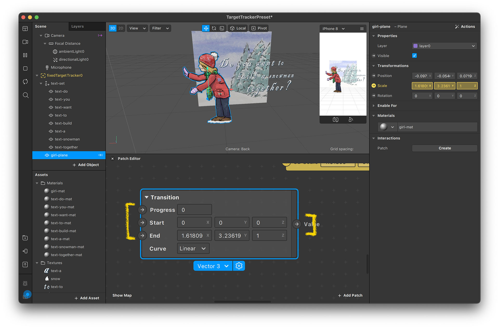
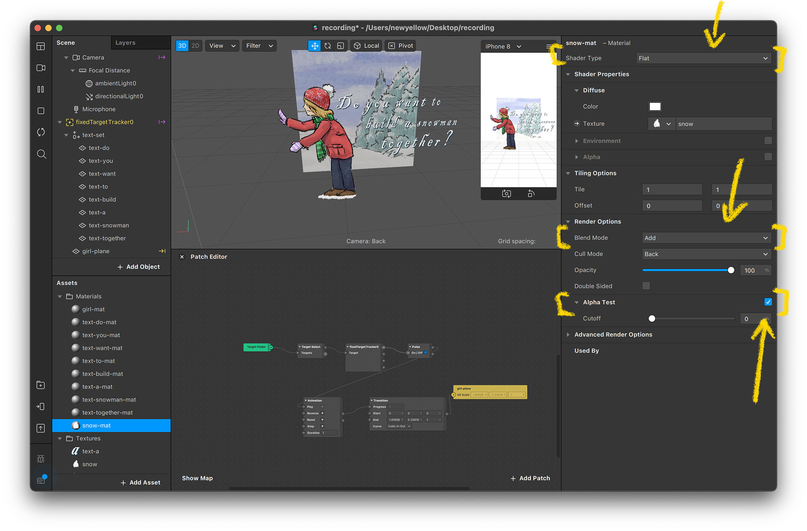
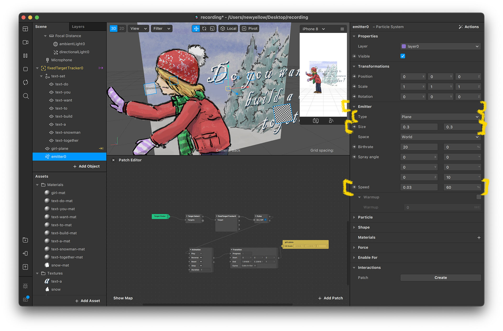
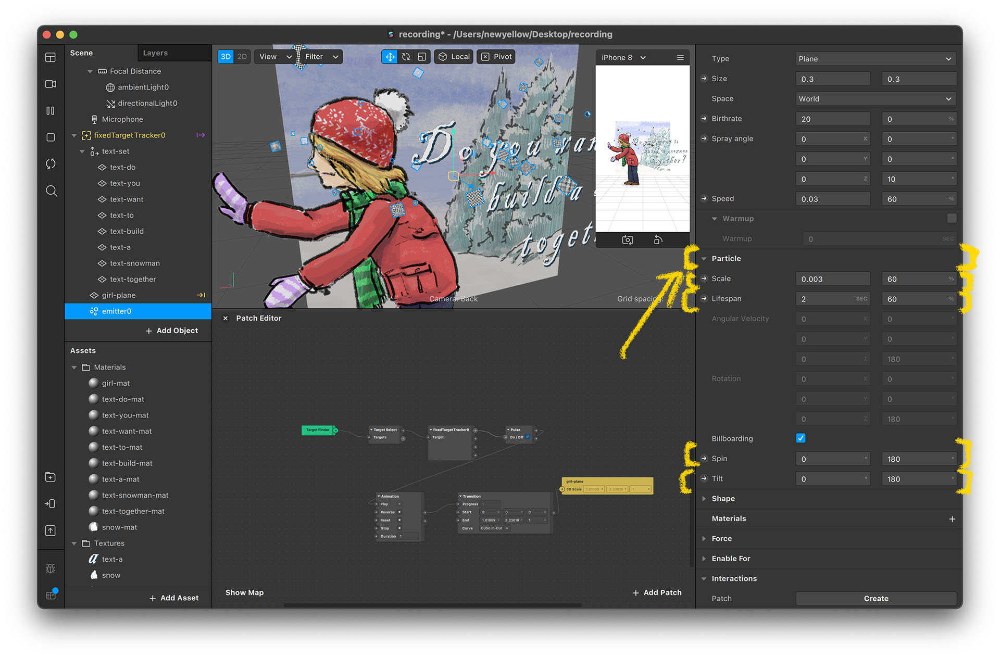

教學專案簡介
在這個專案裡，我們會練習使用 Spark AR 的圖形辨識（Image Tracking）功能。當相機拍到我們設定好的圖案，會播放一些動畫。
這個教學是為了純新手設計的。本篇教學會附上每一個步驟的截圖，即使是從來沒用過 Spark AR 的新手，一定也能跟著本篇完成這個 AR 卡片。完成這張卡片後，應該就能了解大部分 Spark AR 的基本功能。
素材下載
本篇專案會用到的素材、卡片模板、以及已經完成的範例專案下載： Project A - Snowman.zip
Spark 專案準備
建立新專案
- 打開 Spark AR Studio 並選擇 “Create New” → “New Project”
- 選擇圖片辨識 “Target Tracking”.
- 現在新的專案已經成功建立了，並且擁有圖片辨識的功能。你應該可以在 Scene（場景）的視窗裡面看到 fixedTargetTracker0 這個物件
- 如果你沒有看到 fixedTargetTracker0 這個物件，你也可以用另外的方法加入這個物件。在 Scene 視窗上點滑鼠右鍵，選 “Add” → “Fixed Target Tracker”


從電腦內匯入素材
- 在 Assets（素材）視窗，點下方的 “Add Asset” → “Import from Computer” 然後選擇下載好的素材
- 匯入完成後，便可以在 Assets 視窗內看到一個新的 texture（貼圖）資料夾，裡面有剛剛匯入的圖片

設定圖片辨識功能
設定辨識圖
- 選擇 Scene 裡面的 fixedTargetTracker0 物件，然後在右方的 Properties 視窗內可以看到許多選項
- 按一下 “Texture” 旁邊的小箭頭，然後選 “bg-tracking-target” 這個圖片
如果你沒看到這個選項，那表示你還沒有把圖片匯入專案裡，請重新做一次上方「從電腦匯入素材」的部分 - 設定成功後，畫面中間的圖會變成你選的那張圖。這時候就已經完成圖片辨識的設定了，現在 Spark AR 已經具備辨識這張圖的功能
測試辨識圖
並不是每張圖都適合作為辨識圖，因此在我們正式開始製作專案前，最好先測試看看圖片的辨識效果。等確認辨識效果沒問題後，我們再正式開始製作，以免辨識圖需要改，可能也會連帶影響專案的製作內容
- 在 fixedTargetTracker0 物件上按滑鼠右鍵，選 “Add” → “Plane”，新增一片方塊模型
- 要確認這個新增出來的 plane 的層級是正確的放在 fixedTargetTracker0 底下
如果層級關係正確的話，這個物件的名稱在 Scene 視窗內會稍微往右一點，並且在 fixedTargetTracker0 旁邊會有一個小小的三角形符號。如果你新增 plane 後沒有看到這個三角形小符號，你可以拖拉 plane 物件到 fixedTargetTracker0 的名稱上，便可以改變 plane 的層級關係

- 接著我們要來實際測試辨識圖的辨識效果了。Spark AR 雖然有一個 simulator（模擬器視窗），但很可惜並不能用來預覽圖片辨識的結果，所以我們要把這個效果安裝到我們手機裡面，才能做測試
- 選擇左下角的 “Test on the device” 按鈕，然後可以選擇要上傳到 Facebook 或是 Instagram。如果你沒有看到 Facebook 和 Instagram 的按鈕，可以點一下 “Send App” 標題旁邊的小三角形來展開選項
- 等到上傳完成後，手機裡的 Facebook / Instagram 應用程式會跳出新的通知
- 點選通知後，手機就會直接打開攝影機，並開啟剛剛上傳的濾鏡（可能會跳出測試同意的選項，選擇同意就可以了）。接著將你的手機鏡頭對準卡片，如果成功辨識，應該可以在卡片上看到一塊方型的格子圖。你可以試著移動手機的視角，從不同角度拍卡片試試看，看圖片是不是保持在相同的位置
- 如果你有成功看到方形的圖案，那表示圖片辨識的功能沒問題，那我們就可以正式來製作 AR 的卡片內容了！
*使用專門的測試 App 來測試濾鏡
有時候會因為網路不順導致上傳濾鏡失敗，或因為手機設備的問題，導致看起來的效果和 Spark AR 編輯器裡面看起來不一樣。如果有遇到這些問題，可以考慮使用專門的測試程式（Spark AR Player）來測試濾鏡。使用 Spark AR Player 就可以不透過網路，而是透過手機連接線來把濾鏡安裝到手機上。
關於 Spark AR Player 詳細的安裝、使用方法，請參考 Facebook 的官方教學：Previewing and Testing Effects 和 Mirroring Effects to AR Player
*製作好的辨識圖
辨識圖的辨識效果好壞，跟圖片內容的設計有關。如果你有興趣設計自己的辨識圖，可以參考 Facebook 的官方指南：Best Practice for Target Tracking
設定 AR 內容
3D 的「材質」
在 3D 軟體裡面，圖片本身並沒有辦法直接顯示出來。你必須要先定義物件的「3D 形狀」（通常稱為 Mesh），然後再透過「材質」（Material）來定義這個形狀外觀，例如顏色、反光光澤、透明度、表面的粗糙感等
所以如果要顯示圖片，也需要透過「材質」。你需要先建立一個新的材質，並把圖片設定成材質的顏色，然後再把這個材質貼到 3D 物件上
如果不會製作 3D 也不用擔心，在我們這一系列的教學裡面，我們不需要另外製作 3D 的物件。我們只會使用 Spark AR 內建的 Plane 物件（看起來就像一張方形的圖片，他其實是一個 3D 物件）
把女孩放入場景
- 首先我們要建立放置女孩圖片用的材質。點選 Assets 視窗的 “Add Asset” → “Material”
- 把材質重新命名為 “girl-mat”。其實材質的名稱並不會影響我們後續製作的內容，但都給物件正確的命名是一個好習慣，不然製作到後期有很多的物件和材質時，檔案會很亂，到時候就會浪費很多的時間在找東西
- 點選剛建立的材質，右邊的視窗便會顯示許多可以設定的選項。點選 Texture 旁邊的小箭頭，然後選擇女孩的圖片
- 勾選 “Alpha Test” 的選項，這會讓圖片透明的部分正確變成透明的。這個選項和一些圖層的設定有關，詳細的內容我們會在下一個專案裡面說明，在此先勾選就好了
- 材質準備好了，接著來建立形狀。在 fixedTargetTracker0 上按滑鼠右鍵，選 “Add” → “Plane”
- 你可以點兩下剛建立的 plane 來重新命名。在這我把它重新命名為 “girl-plane”
- 現在這塊 girl-plane 和之前我們建立的 plane0 重疊了，我們稍微把 girl-plane 往前移動一點，讓他們分開，這樣才看得出差異
- 點選 girl-plane，然後在右邊找到 “Material” 並點一下旁邊的 “+” 符號，這時你應該可以看到我們剛剛建立好的材質 girl-mat 
- 選了 girl-mat 後，這塊 plane 就會變成女孩的樣子了。不過現在這個比例有點怪怪的，這是因為 plane 預設創建出來的時候都是正方形的。所以接著我們就要來調整 plane 的比例


調整物件形狀以符合圖片比例
- 點選 Assets 視窗的 girl-image，右邊可以看到這張圖的寬度（width）和高度（height）的資訊，像這張圖是 512 x 1024 
- 接著根據圖片的長寬比來設定 girl-plane 的 scale（大小）。如果數字很好計算的話，可以直接算出比例，例如 512:1024 就是 1:2，所以把 girl-plane 的 scale X 設為 1，Y 設為 2
- 但有時候圖片的長寬比沒那麼好算，所以我通常會直接把他們的「解析度除以 1000」設定成 scale 的 x y 數值（除以 1000 是因為直接輸入原數值會太大）。以這個 girl-plane 來說，就是 0.512 和 1.024。至於 Z 的數值通常沒有差，但不能是 0，不然可能會出問題
- 接著可以使用縮放工具來調整 girl-plane 的大小，只要同時針對 x 和 y 一起縮放，就可以維持正確的比例


設定女孩的位置
- 把女孩放到雪人旁邊。雖然我們從編輯器裡面看不到雪人的位置，但我們可以看著卡片，大概猜一下
- 然後把濾鏡放到手機內測試，看看是否放置到正確的位置。如果位置不對的話，就再調整、然後再測試一次，直到位置看起來正確


*移動、縮放、旋轉物件
如果你對 3D 軟體的空間操作不熟悉的話，可以參考這兩篇官方的教學文章：
Using the Manipulators
Navigating the Spark AR Studio Interface
加入文字
就像加入女孩的圖一樣，加入文字的方法，就是為每一個文字建立材質、建立 Plane、然後放到場景裡面。但因為文字物件很多，如果每個物件都分開排的時候，可能會很麻煩（例如：想要修改整體文字的位置，卻得個別調整每個物件）。因此，針對這種情況，我們通常會使用一種群組的技巧
- 為每個文字物件建立材質和 Plane 物件。建議為每個材質、物件命名，不然很容易搞混（縮圖也長得很像）
- 在 fixedTargetTracker0 上點右鍵，選擇 “Add” → “Null Object”（空物件）。所謂的空物件，就是一個只包含 Trasform（位置、旋轉、大小）資料的物件，除此之外什麼都沒有
- 把這個空物件重新命名為 “text-set” 並且把所有的文字物件都拉進這個空物件底下（要在這個物件的層級裡）
- 調整每個文字的大小和位置，把它們排成你想要的樣子
- 因為現在所有文字物件都在 text-set 底下，所以你現在可以直接移動、旋轉、或縮放整個 text-set 物件，文字的排版就會維持原來的樣子
- 如果一來，每當你想要移動文字時，就不需要再分別調整每一個文字物件了


使用 Patch Editor 來做動畫
Patch Editor（或簡稱為 Patch）是 Spark AR 最棒的功能，透過 Patch 我們可以讓任何物件的數值動態改變。接著我們會用 Patch 來對 girl-plane 和文字物件做動畫
試做 Loop 動畫
- 我們先來做 girl-plane 的動畫。點選 girl-plane 然後注意看，右邊的 Scale 數值的旁邊，有一個 “→” 箭頭的圖案。如果數值旁邊有這個圖案，表示這個數值可以透過 Patch Editor 來設定
- 點一下 Scale 旁邊的這個箭頭，然後底下會出現 Patch Editor 視窗，然後裡面會有一個黃色的方塊，這個方塊裡面的數值就是我們剛剛點選的 girl-plane 的 Scale 的數值
- 這個方塊我們稱為 Patch，在 Spark AR 內有很多不同功能的 Patch。我們可以在 Patch Editor 視窗內點滑鼠右鍵，或按視窗右下方的 “+ Add Patch” 來新增 Patch。新增 Patch 可以透過分類來尋找，或是可以直接在搜尋視窗內輸入 Patch 名稱
- 在此我們先新增一個 "Transition" Patch 和一個 "Loop Animation" Patch 
- 設定 Transition Patch 的 start 數值為 0, 0, 0，然後 end 數值設定成跟 girl-plane's 的 scale 數值一樣。在這個範例裡，數值是 (1.61809, 3.23619, 1) 
- 每個 Patch 都可以設定輸入（inputs）和輸出（outputs）。每個 Patch 左邊的箭頭是輸入，右邊的箭頭是輸出 
- 用滑鼠左鍵點選箭頭，然後按住滑鼠左鍵拖拉，可以連接輸出到輸入
- 把 Loop Animation 的 progress 連接到 Transform 的 progress；然後把 Transform 的 value 連接到 girl-plane 的 3D scale
- 如果連接正確的話，應該會看到 person-plane 開始重複變大變小
- 你可以試設定 Transition Patch 的 curve 數值來改變動畫的感覺，挑一個你最喜歡的吧


*動畫曲線 Animation Curves
在這個 Transform 裡面的 curve（曲線） 是在電腦動畫裡面很常見的東西，有時候也稱為 easing type。如果你對這些 curve 的名稱不熟悉的話，這個網站有各種 curve 的視覺化範例：easings.net
讓動畫在辨識到圖片時觸發
在製作動畫時，使用 Loop Animation Patch 來預覽很方便，但實際上我們想要的是，讓卡片的圖案被辨識到後，啟動動畫，然後只播一次就好，不要重複輪播。因此現在我們要改用其他的 Patch
- 把 Loop Animation Patch 刪掉，然後加入一個 Animation Patch，然後一樣把 progress 連起來
- 你會看到動畫並沒有啟動，這是因為我們需要傳送一個觸發的訊號到 "Play Animation"
- 把 fixedTargetTracker0 拖進 Patch Editor 視窗，系統會自動產生 3 個 Patch
- 把 fixedTargetTracker0 Patch 的 “Found” 數值接到 Animation Patch 的 “Play”
- 系統會自動多加入一個 Pulse Patch 來轉換訊號的型態，以符合不同 Patch 的需求
- 然後在手機上試試看這個濾鏡，如果成功的話，應該在辨識到卡片的瞬間，會看到女孩的圖蹦出來（縮放的方式出現）


設定動畫順序
接著我們要來幫文字加入動畫，基本上概念和剛剛設定的女孩圖片動畫差不多。但在這邊，我們會使用動畫的 OnComplete 輸出和 Delay Patch 來設定動畫的先後順序，幫文字加入類似打字機的效果
- 幫每個文字設定縮放動畫，設定的方式就和上面的女孩動畫一樣（Animation Patch 接到 Transition Patch 再接到文字的 Scale 數值）
- Animation Patch 有一個 completed 輸出，會在動畫播完的時候觸發。我們把一個文字的 completed 接到另一個文字的 Play，這樣的方是就可以設定動畫的順序，讓文字依序出現

- 在中間可以多加入一個 Delay Patch 來延遲觸發的時間，時間的單位是秒
- 如果你覺得這邊看起來有點複雜的話，可以打開壓縮檔裡面的範例專案來看看 Patch 的設定。如果打開專案後沒有看到 Patch Editor 視窗，你可以從選單 “View” → “Show/Hide Patch Editor” 來打開 Patch Editor 視窗


製作下雪特效
我們會使用粒子特效（Particle System）來製作下雪的效果，粒子是各種 3D 軟體裡都有的一種功能，專門用來做一些非固態的模擬，像是火焰、煙、水之類的，當然 Spark AR 也有粒子
- 建立一個新的材質，準備給粒子特效使用
- 把材質的 shader type 設定成 flat，texture 設定成 snow，然後 blend mode 設成 add，並且勾選 “Alpha Test” 
- 在 Scene 視窗點右鍵選 “Add” → “Particle System” 來加入粒子特效物件
- 接著設定粒子特效物件的數值。在上半部的 emitter 部分，把 type 設為 plane；size 設成 0.3, 0.3（這個選項要先把 type 設為 plane 才會出現）；speed 設為 0.03, 60 
- 下半部還有 particle 的部分要設定。把 scale 設為 0.003, 60；lifespan 設為 2, 60；spin 設為 0, 180；tilt 設為 0, 180 
- 把 material 設為 snow particle
- 把粒子特效物件放到女孩的上方，然後旋轉一下，讓落雪的方向朝下

*設計自己的粒子特效
設計粒子特效，就是透過調整各種不同的數值來達成，因此，學習粒子特效最好的方法，就是實際調調看這些數值，看看效果如何變化
如果你對粒子特效有興趣，你可以參考這篇官方的粒子特效教學：Adding and Editing Particle Systems
做到這裡，這個專案就完成了！Yay！！
如果一切設定都沒問題的話，在手機上測試時，應該可以看到這樣的成果：